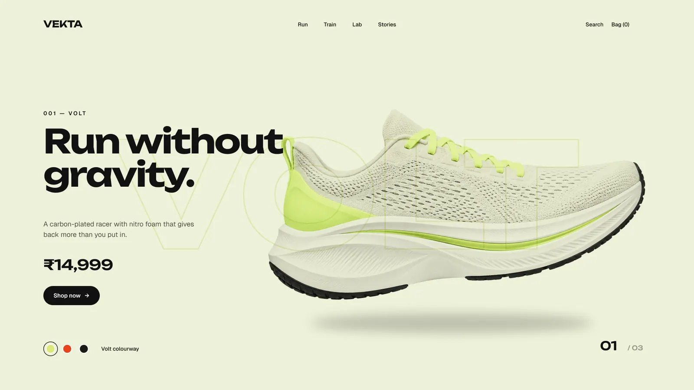
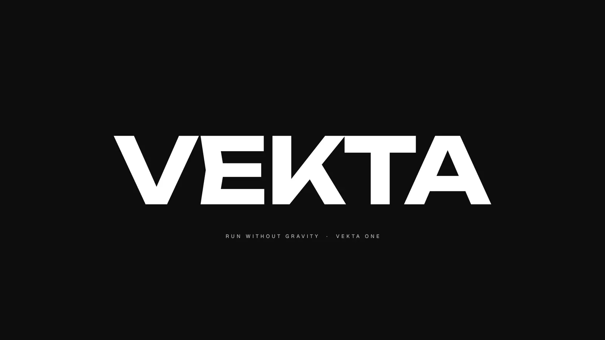
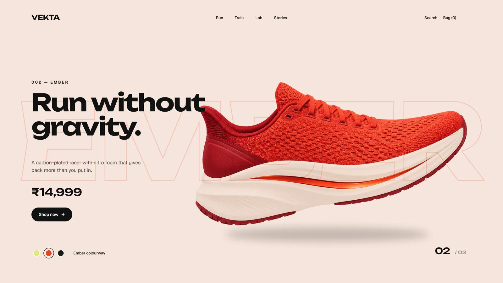
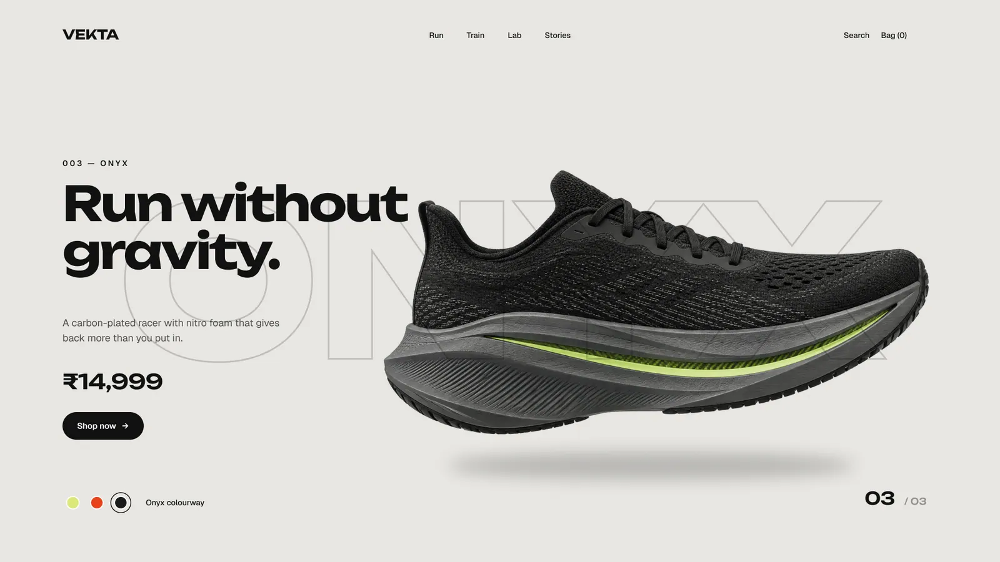
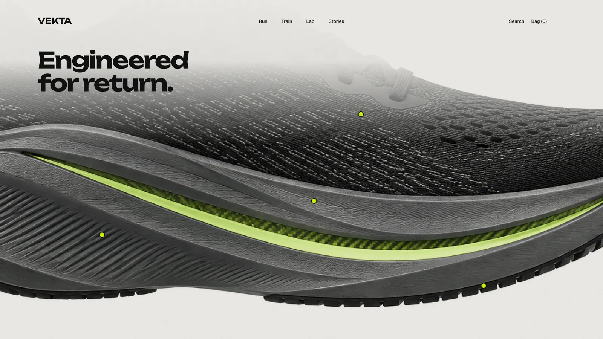
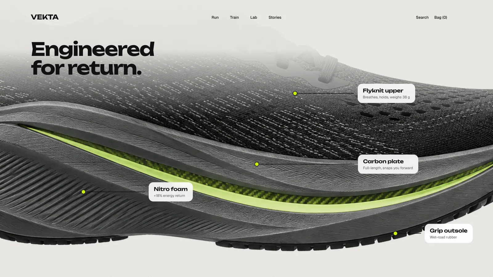
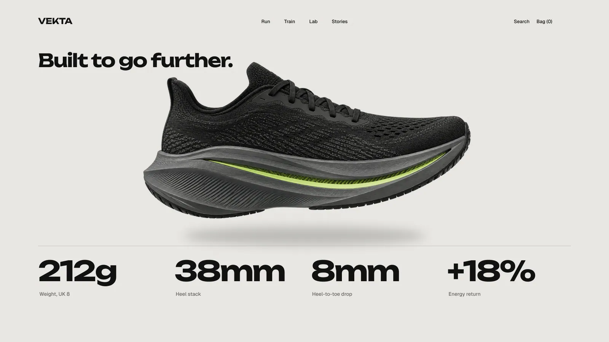
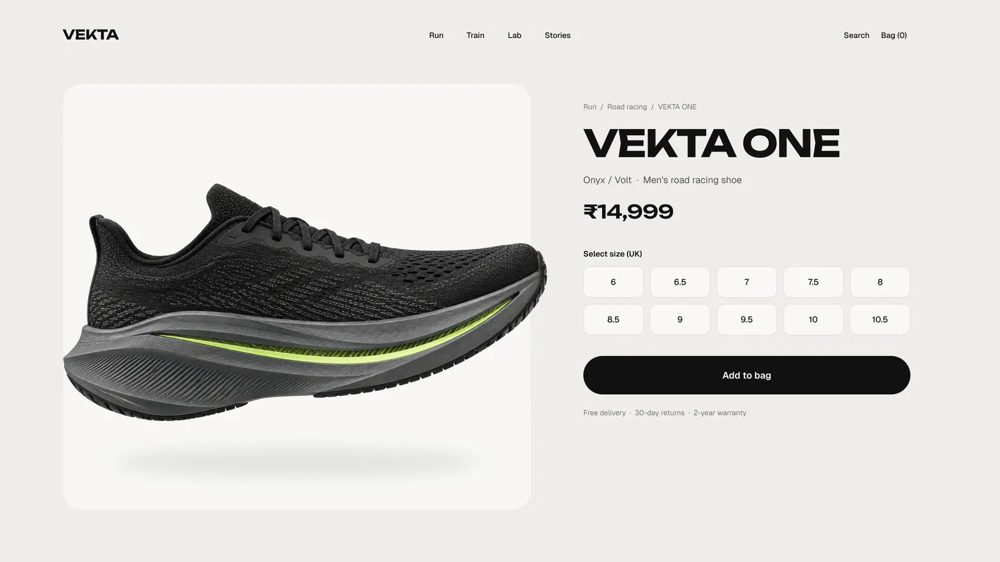
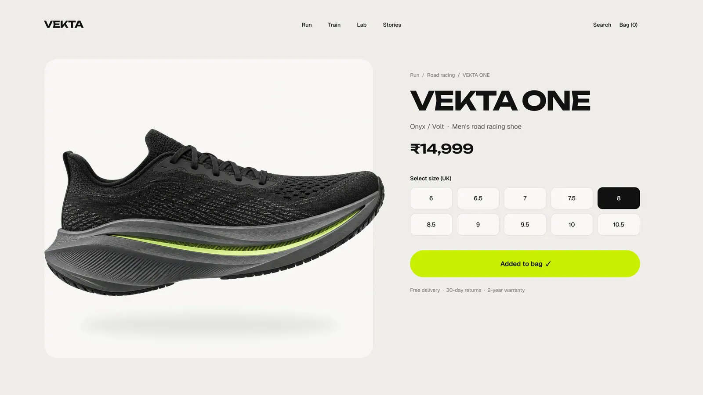

VEKTAAnimated product website
Run without gravity. - Running Shoe Website Motion Design Case Study
A fast, bold running shoe site that zooms into the details and ends at size selection.

01Overview
A fast, bold running shoe site that zooms into the details and ends at size selection.
VEKTA ONE is a concept running shoe launch. I designed and animated nine frames in Figma: intro, three colourways, a zoom into the midsole with callouts, performance specs, and the product page with size selection.
02The challenge
What had to be solved
Running shoes are sold on performance numbers, but numbers alone are dull. The site had to make the specs feel exciting.
Design goals
- Make each colourway feel energetic
- Zoom into the technology
- Present specs as big, simple numbers
- Finish on a clear buy step
03Process
How I approached it
- Colour-led heroEach colourway changes the background to match the shoe.
- Zoom inThe camera moves into the midsole with callouts.
- Specs as hero numbers212g, 38mm, 8mm drop and +18% energy return.
- Product pageSize grid and add to cart, with the selected size highlighted.
04Colourways
Run without gravity.
Volt, Ember and Onyx, each with its own background tone.



05Zoom and callouts
Engineered for return.
The midsole fills the screen and callouts explain the foam and plate.


06Specs and product page
Built to go further.
Four big specs, then the product page with size selection.



07Decisions
Key design decisions
Colourways feel like different moods, not just swatches.
Specs are set large so they read like headlines.
The bright accent appears on the add to cart, guiding the eye at the end.
08Design system
Visual language
Clean light backgrounds tinted per colourway, heavy wide headlines and a lime action colour.
TypeWide heavy sans-serif
09Outcome
What was delivered
VEKTA turns running specs into a fast, visual story that ends at size selection, in nine animated frames.
If the project continues, next I would:
- Add a shoe comparison
- Design a fit quiz
- Build with scroll-driven zoom
Next project
VELAJourneys shaped by altitude.View project